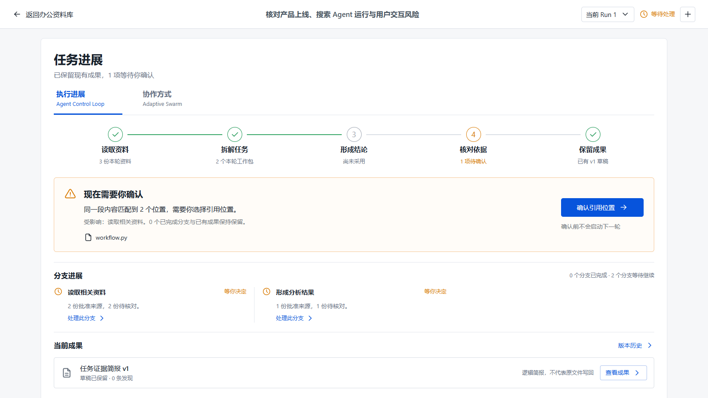
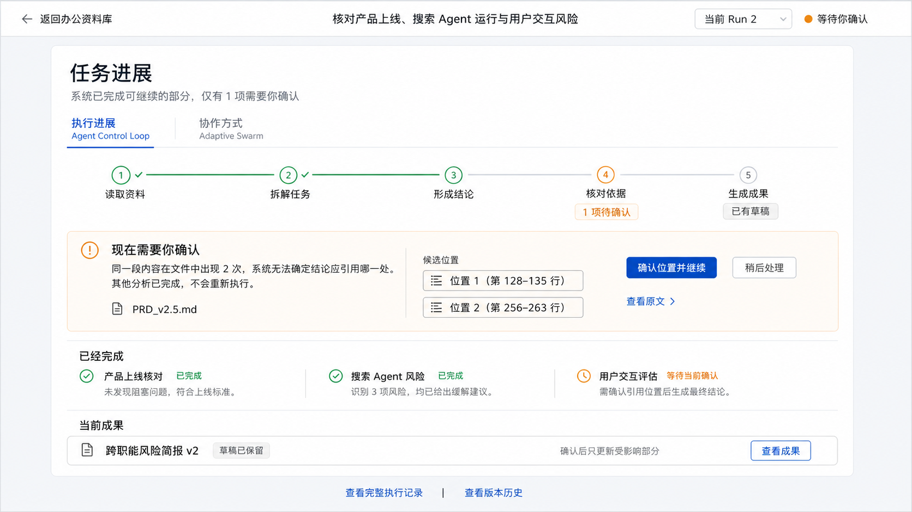

已实现 四个交互视图
已连接 既有 Task / Run / Snapshot
已完成 候选选择与局部恢复前台
Demo 3 为设计稿，不是新 Runtime
打开完整截图真实组件渲染 · 受控 Snapshot


第一屏先显示当前阶段、待你处理的一项、保留的分支和成果。完整回执留在按需展开的执行记录。
这次具体改了什么
- 01
任务进展不再是一大页技术说明
五个阶段独立取事实；不能因为已有草稿，就把未通过的分析或证据门涂绿。 - 02
时间维与组织维共用同一任务
按轮记录、分支详情、工作包 DAG 和贡献回执都读取同一份 Snapshot。没有复制出两个演示 Runtime。 - 03
确认原文是一次明确的人类选择
原生单选、无默认项、查看原文与选择分离；失败不冒充成功，终态仅记录选择，不承诺原地续跑。 - 04
日常操作直接可达
任务历史、新建任务、暂停、调整下一轮、停止并保留、成果与版本历史沿用既有协议。
验证结果
| 检查 | 当前证据 | 不能推出 |
|---|---|---|
| Python 全量 | 429 passed / 23 skipped | 未执行的数据库条件门 |
| 前端自动化 | 90 passed · 最终 3.3 分钟 | 真实 Provider 效果或用户研究 |
| 新边界用例 | 6 passed：无预选、409、权威 ID、过期包、终态、DAG | 生产审批或外部执行 |
| 桌面 / 手机 | 1672、1440、390 px 受控截图 | 全部设备与内容组合 |
| 工程检查 | lint / Ruff / 生产构建通过 | 多实例部署或安全沙箱 |
| 实际页面 | 资料加载、视图切换、空草稿通过 | 未提交任务，不算模型效果验证 |
移动端证据
{kind=link}
{kind=link}
{kind=link}
下次会议怎么讲
| 议题 | 可展示材料 | 需要评审 / 后续工作 |
|---|---|---|
| Demo 1 时间维连续性 | 按轮执行记录、保留成果、同 Task 单分支续办 | 真实 Provider 与持久化联合演示另行验收 |
| Demo 2 组织维复杂性 | 工作包依赖、显式确认派发、贡献采用与局部等待 | 不是通用分布式 Worker Runtime；不演示假驾驶舱 |
| Demo 3 人机边界 | 8 类案例交互沙盘、指导手册初稿 | 先评审规则和接管方式，再选择纵切进入真实 Runtime |
| 技术时效性 | 本轮定向引用与已有实现边界 | 三个 Demo 完成后再做固定日期、固定配置的行业回溯，不提前宣称完成 |